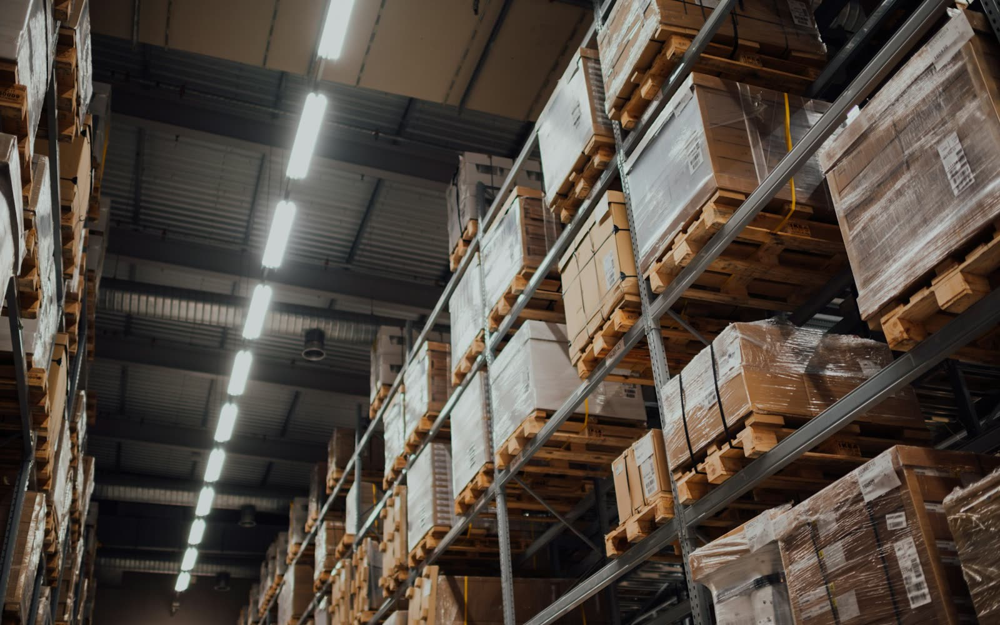
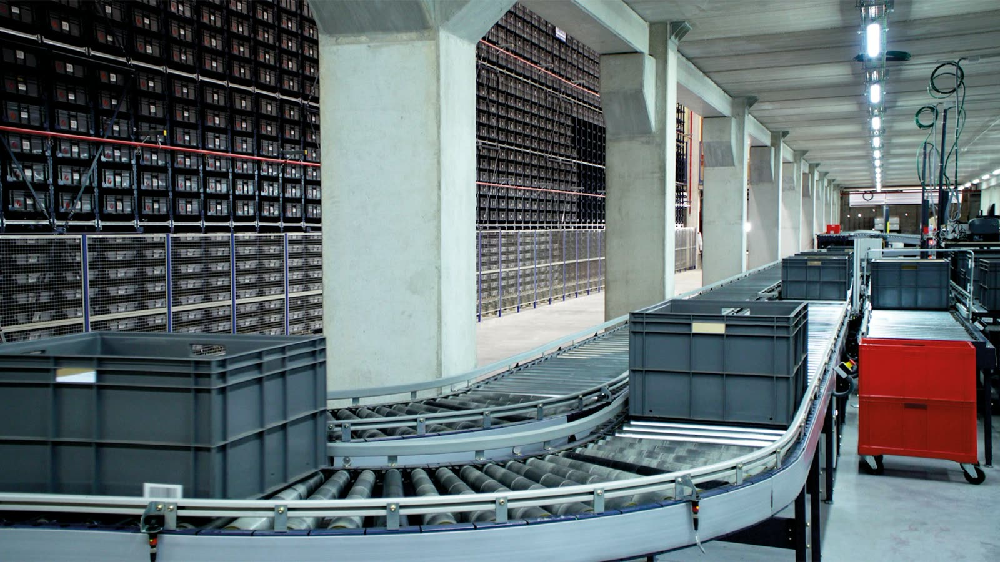
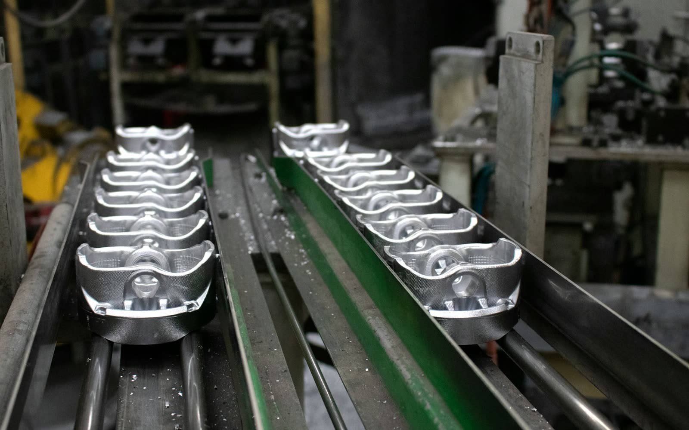
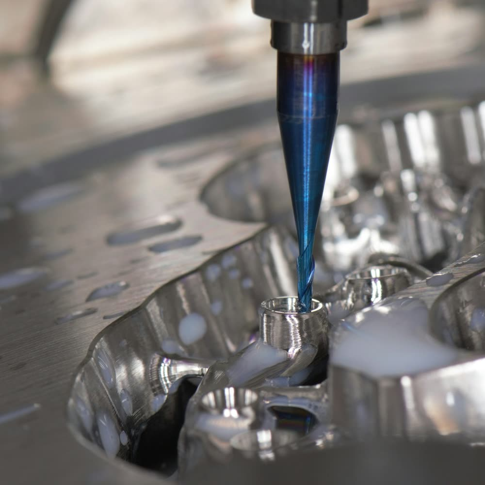
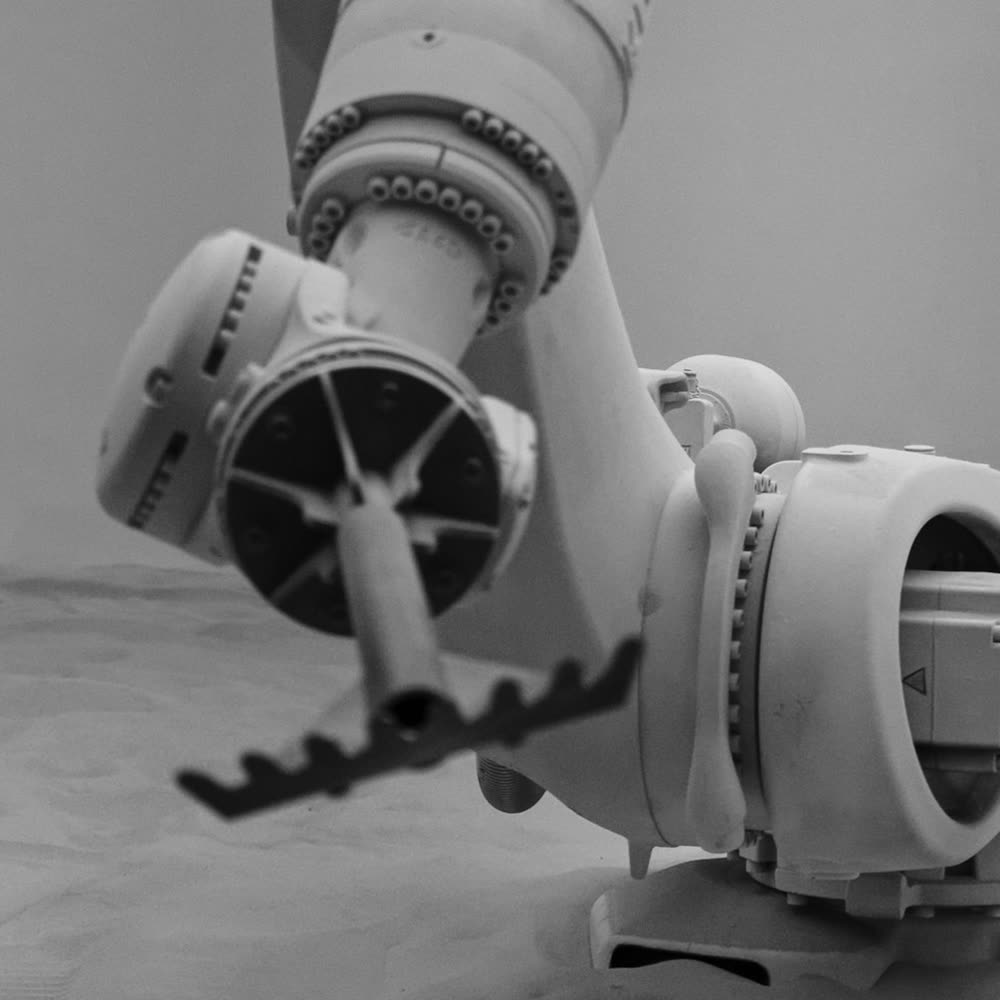
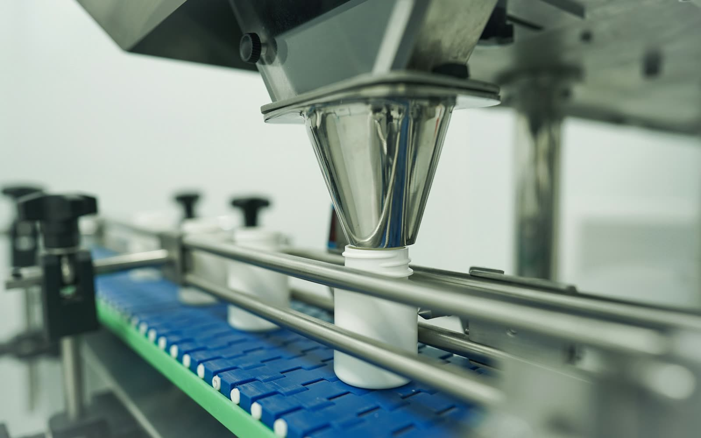

Sorting Line
스크롤을 내리면 창이 열립니다 ↓

숫자는 예시입니다

Production Line
INPUT
주조한 부품이 두 줄로 라인에 올라옵니다. 간격은 센서가 맞춥니다.
INSPECT
카메라가 표면을 읽어 흠이 있는 부품을 옆 라인으로 빼냅니다.
STACK
로봇이 통과한 부품을 팔레트에 쌓고 수량을 기록합니다.
Built In House
라인에 맞는 부품을 가공하고, 로봇의 움직임을 현장에서 하나씩 잡습니다. 설치한 뒤에는 멀리서도 상태를 봅니다.
숫자는 예시입니다



용기를 채우는 충전 라인
Where It Runs
식품 · 음료
병과 용기를 채우고 뚜껑을 닫는 충전 라인
택배 · 풀필먼트
행선지별로 상자를 가르는 분류 라인
자동차 부품
주조 부품을 옮기고 검사하는 이송 라인
화장품 · 생활용품
소량 다품종을 섞어 담는 포장 라인
현장을 하루 살펴보고 진단서를 드립니다 · 02-000-0000